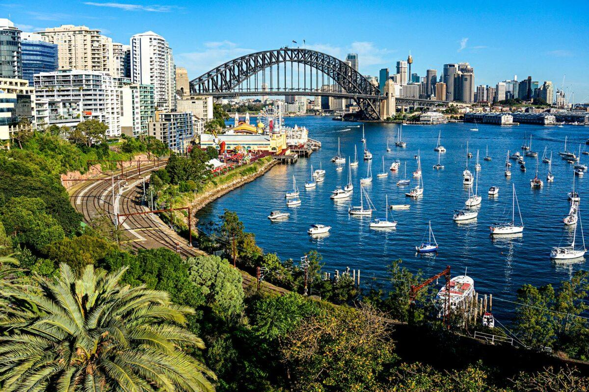
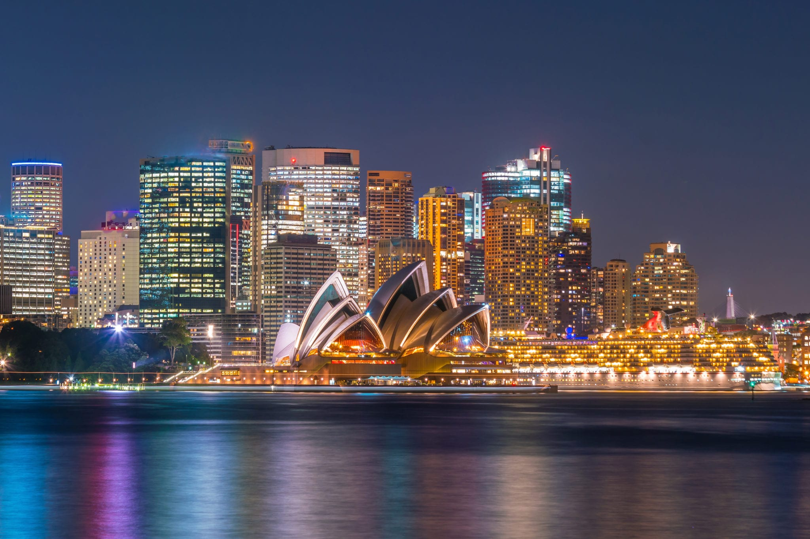

Sydney
Position géographique
Histoire
Sydney Opera House
The Rocks
Sydney est située à 714 km au nord-est de Melbourne, à 731 km au sud-sud-ouest de Brisbane, à 1 163 km à l'est d'Adélaïde, à 3 292 km à l'est-sud-est de Perth et à 16 965 km à l'est-nord-est de Paris. La ville se trouve dans le Sud-Est de l'Australie, dans un bassin côtier encadré par la mer de Tasman à l'est, les montagnes Bleues à l'ouest, le fleuve Hawkesbury au nord et le plateau de Woronora au sud.
L'histoire de Sydney, la plus grande ville d'Australie, remonte à l'arrivée des premiers colons européens en 1788. Fondée en tant que colonie pénitentiaire britannique, Sydney a connu une croissance rapide au cours du XIXe siècle grâce à l'immigration, au commerce et à l'activité économique liée à la ruée vers l'or. Au fil des décennies, Sydney est devenue un centre économique, culturel et financier majeur de l'Australie. Son emblème emblématique, l'Opéra de Sydney, a été inauguré en 1973, devenant une icône mondiale. La ville a également accueilli les Jeux olympiques d'été en 2000, renforçant sa renommée internationale. Sydney est réputée pour son architecture distinctive, ses plages emblématiques comme Bondi Beach, son port naturel, son pont du port de Sydney, et son mode de vie décontracté. Elle continue d'être un centre d'innovation, d'éducation et de diversité culturelle, faisant de Sydney l'une des villes les plus dynamiques et attrayantes du monde.
L'Opéra de Sydney est l'un des monuments les plus emblématiques et reconnaissables au monde. Il est situé sur le port de Sydney, en Australie, et a été inauguré le 20 octobre 1973. Conçu par l'architecte danois Jørn Utzon, l'Opéra de Sydney est renommé pour son architecture innovante et audacieuse. Les caractéristiques les plus distinctives de l'Opéra de Sydney sont ses coquilles en forme de voiles blanches qui s'élèvent au-dessus du port. Ces coquilles sont constituées de plus de 1 000 000 de tuiles en céramique blanche et sont un exemple remarquable d'ingénierie architecturale. L'ensemble du site comprend plusieurs salles de spectacle, dont la salle de concert, la salle d'opéra, la salle de théâtre et la salle de récital. L'Opéra de Sydney est non seulement une merveille architecturale, mais il est également un centre culturel majeur. Il accueille une variété de spectacles, concerts, opéras, ballets et autres événements artistiques tout au long de l'année. De plus, il attire des visiteurs du monde entier qui viennent admirer son design unique et assister à des performances de qualité. Classé au patrimoine mondial de l'UNESCO en 2007, l'Opéra de Sydney est devenu le symbole emblématique de la ville et de l'Australie, représentant l'excellence architecturale et culturelle.
The Rocks est le plus ancien quartier de la cité de Sydney, en Australie, situé sur le côté ouest de Sydney Cove, non loin du Circular Quay, lieu où la ville est officiellement fondée par le capitaine Arthur Phillip en 1788. Les premiers bâtiments construits à cette époque sont en grès, ce qui donne son nom à ce quartier. À l'origine, The Rocks est fréquenté par les marins et les prostituées, puis à la fin des années 1800 par des gangs. Plusieurs projets de reconstruction sont entrepris, stoppés par les deux guerres mondiales. Sous la pression des habitants du quartier, des bâtiments anciens sont conservés et restaurés. The Rocks est maintenant un lieu touristique, connu pour son marché qui est ouvert toutes les fins de semaine et pour ses pubs et magasins de souvenirs.